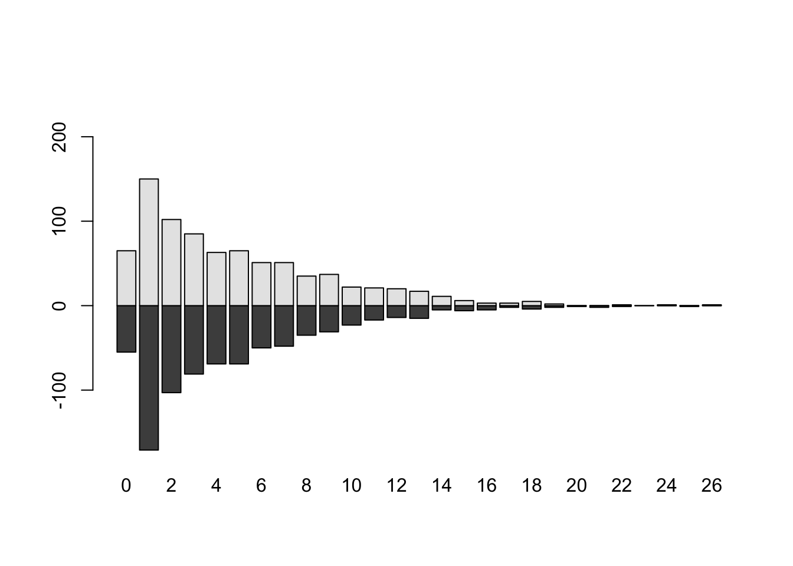

12 Régression de Poisson
Exercice 1 (Questions de cours) C, A, B, A, B, B, C, A
Exercice 2
Le modèle linéaire gaussien s’écrit \[% \begin{align*} Y_i=X_{i.}'\beta + \varepsilon_i, \ \ \ \varepsilon_i\sim\mathcal{N}(0,\sigma^2) \end{align*} \] c’est-à-dire \[% \begin{align*} Y_i\sim\mathcal{N}(X_{i.}'\beta,\sigma^2) \end{align*} \] La densité en \(y\) est \[% \begin{align*} f(y)&=\frac{1}{\sqrt{2\pi}}\exp(\frac{-(y-x'\beta)^2}{2\sigma^2}) =\exp(\frac{(y (x'\beta) - (x'\beta)^2/2)}{\sigma^2} - \frac{1}{2}(\frac{y^2}{\sigma^2} + \log(2\pi\sigma^2) )) \end{align*} \] On a donc \[% \begin{align*} \alpha&=x'\beta\\ b(\alpha)&=\alpha^2/2\\ \phi&=\sigma^2\\ a(\phi)&=\sigma^2\\ c(y, \phi)&=- \frac{1}{2}(\frac{y^2}{\phi} + \log(2\pi\phi) ). \end{align*} \] La fonction de lien canonique est par définition \[% \begin{align*} g(u)=(b')^{-1}(u) b'(\alpha)=(\alpha^2/2)'=\alpha \end{align*} \] L’inverse de \(b'(.): \alpha\mapsto u=b'(\alpha)=\alpha\) est donc \(b'(.)^{-1}: u\mapsto \alpha=u\), c’est le lien identité.
Le modèle logistique avec répétition en \(\tilde x_t\) (voir paragraphe 11.4.1, p. 270) s’écrit \[% \begin{align} \tilde Y_t=\tilde y_t | X=\tilde x_t \sim \mathcal{B}(n_t, p_\beta(x_t)) \end{align} \] où \(p_\beta(x_t)=\text{logit}(x_t\beta).\) La probabilité que \(\tilde Y_t\) vaille \(\tilde y_t\) ou densité par rapport à la mesure de comptage au point \(\tilde y_t\) en s’écrit \[% \begin{align*} f(\tilde y_t)= P(\tilde Y_t=\tilde y_t)=\binom{n_t}{ \tilde y_t} p_\beta(x_t)^{\tilde y_t} (1-p_\beta(x_t))^{\tilde n_t-\tilde y_t} \end{align*} \] Si il n’y a pas de répétitions en \(\tilde x_t\) on a \(n_t=1\) et \(\tilde y_t=0\) ou \(1\).
En modèle GLM on s’intéresse non pas au comptage \(\tilde Y_t\) mais à la moyenne \(\bar Y_t=\tilde Y_t/n_t\), nous avons donc \[% \begin{align*} f(\bar y_t)= P(\bar Y_t=\bar y_t)=\binom{n_t}{n_t \bar y_t} p_\beta(x_t)^{n_t\bar y_t} (1-p_\beta(x_t))^{n_t-n_t\bar y_t} \end{align*} \] En introduisant l’exponentielle: \[% \begin{align*} f(\bar y_t) &= \exp\biggl(\log\binom{n_t}{n_t \bar y_t}\biggr) \exp\biggl(\log \bigl(p_\beta(x_t)^{n_t\bar y_t}\bigr)\biggr) \exp\biggl(\log\bigl( (1-p_\beta(x_t))^{n_t-n_t\bar y_t}\bigr)\biggr)\\ &= \exp\biggl(n_t\bar y_t\log p_\beta(x_t) + (n_t-n_t\bar y_t )\log (1-p_\beta(x_t)) + \log\binom{n_t}{n_t \bar y_t}\biggr)\\ &=\exp\biggl(n_t\bar y_t(\log p_\beta(x_t)-\log (1-p_\beta(x_t))) - n_t\log (1-p_\beta(x_t)) + \log\binom{n_t}{n_t \bar y_t}\biggr)\\ &=\exp\biggl(n_t\bigl(\bar y_t\log\frac{ p_\beta(x_t)}{1-p_\beta(x_t)} - \log (1-p_\beta(x_t))\bigr) + \log\binom{n_t}{n_t \bar y_t}\biggr) \end{align*} \] Ici nous avons \(\alpha=\) ou \[% \begin{align*} \alpha&=\log\frac{ p_\beta(x_t)}{1-p_\beta(x_t)}\\ b(\alpha)&=\log(1+\exp\alpha)=\log (1-p_\beta(x_t))\\ \phi&=1/n_t\\ a(\phi)&=\phi\\ c(\bar y_t, \phi)&=\log\binom{1/\phi}{\bar y_t/\phi}. \end{align*} \] Pour calculer la fonction de lien canonique nous devons dériver \(b(.)\) et inverser la fonction \[% \begin{align*} b'(\alpha)=\log(1+\exp \alpha)'=\frac{\exp(\alpha)}{1+\exp \alpha}=u\\ (b')^{-1}(u)=\log\frac{u}{1-u}=\alpha \end{align*} \] c’est le lien logistique.
Le modèle de poisson s’écrit \[% \begin{align*} Y_i=y_i | X=x_i \sim \mathcal{P}(\lambda_\beta(x_i)) \end{align*} \] La probabilité que \(Y_i\) vaille $y_i ou densité par rapport à la mesure de comptage au point \(y_i\) en s’écrit \[% \begin{align*} f(y_i)&= P(\tilde Y_i=\tilde y_i)=\exp(-\lambda_\beta(x_i)) \frac{\lambda_\beta(x_i)^{y_i}}{y_i!}\\ &=\exp\bigl(-\lambda_\beta(x_i) + \log (\lambda_\beta(x_i)^{y_i}) - \log (y_i!)\bigr)\\ &=\exp\bigl(y_i\log (\lambda_\beta(x_i)) - \lambda_\beta(x_i) - \log (y_i!)\bigr) \end{align*} \] Ici nous avons \[% \begin{align*} \alpha&=\log (\lambda_\beta(x_i))\\ b(\alpha)&=\exp(\alpha)=\lambda_\beta(x_i)\\ \phi&=1\\ a(\phi)&=1\\ c(\bar y_t, \phi)&=- \log (y_i!). \end{align*} \] Pour calculer la fonction de lien canonique nous devons dériver \(b(.)\) et inverser la fonction \[% \begin{align*} b'(\alpha)=\exp(\alpha)=u\\ (b')^{-1}(u)=\log u=\alpha \end{align*} \] c’est le lien log.
Exercice 3
- Les moments factoriels d’ordre \(r\) d’une variable aléatoire suivant une loi de Poisson valent: \[%
\begin{align*}
\mathbf E[X(X-1)\dots(X-r+1)] &= \sum_{k=0}^\infty k(k-1)\dots(k-r+1)
\frac{\lambda^k}{k!} e^{-\lambda}\\
&= e^{-\lambda} \sum_{k=r}^\infty \frac{k(k-1)\dots(k-r+1)}{k!} \lambda^k \\
&= e^{-\lambda} \lambda^r \sum_{k=r}^\infty \frac{1}{(k-r)!} \lambda^{k-r}\\
&= \lambda^r.
\end{align*}
\]
- Pour \(r=1\) nous avons donc \[% \begin{align*} \mathbf E(X) = \lambda \end{align*} \] Pour \(r=2\) nous avons donc \[% \begin{align*} \mathbf E(X(X-1)) &= \mathbf E(X^2) - \mathbf E(X) =\lambda^2\\ \mathbf E(X^2) &= \lambda^2 + \lambda \end{align*} \] Et nous avons la variance \[% \begin{align*} \mathop{\mathrm{V}}(X) &= \mathbf E(X^2) - \mathbf E(X)^2 =\lambda^2 + \lambda - \lambda^2 = \lambda. \end{align*} \]
Exercice 4 (Stabilisation de la variance) Tirons notre échantillon de taille \(n=10^6\) selon des loi de poisson de paramètre \(\lambda\in\{1,2,\dotsc, 20\}\)
n <- 1e7
lambdas <- 1:20
varX <- rep(0, length(lambdas))
varZ <- rep(0, length(lambdas))
for (l in 1:length(lambdas)){
ech <- rpois(n, lambdas[l])
varX[l] <- var(ech)
ech <- sqrt(ech)
varZ[l] <- var(ech)
}
print(varX) [1] 0.9997369 1.9997818 2.9984626 4.0031435 4.9959479 5.9992567
[7] 7.0043691 7.9954055 8.9991719 9.9990725 10.9885709 12.0038720
[13] 12.9821786 13.9998158 14.9955777 16.0014936 16.9962143 17.9969313
[19] 19.0054412 19.9929461print(varZ) [1] 0.4022116 0.3897837 0.3396863 0.3059119 0.2856383 0.2753928 0.2693276
[8] 0.2652610 0.2629826 0.2613118 0.2598299 0.2590222 0.2578215 0.2575848
[15] 0.2568114 0.2565663 0.2560164 0.2556442 0.2554479 0.2549726Exercice 5 (Stabilisation de la variance) Comme \(X_i\stackrel{\mathrm{iid}}{\sim} \mathcal{P}(\lambda)\) nous avons par le TCL que la moyenne d’un \(n\) échantillon \(\bar X_n\) converge vers la loi normale et plus exactement \(\sqrt{n}(\bar X_n - \lambda) \stackrel{\mathcal{D}}{\rightarrow} \mathcal{N}(0, \lambda)\). Posons la fonction \(g(.)\) de classe \(C^1\) et utilisons un développement de Taylor autour de \(\lambda\): \[ \begin{align*} g(x)&=g(\lambda) + (x-\lambda) g'(\lambda) + o(x-\lambda) \end{align*} \] Ici nous nous intéressons à stabiliser \(\bar X_n\) et nous posons la transformation \(g(\bar X_n)\) ce qui donne \[ \begin{align*} g(\bar X_n)&=g(\lambda) + (\bar X_n-\lambda) g'(\lambda) + o(\bar X_n-\lambda)\\ \sqrt{n}(g(\bar X_n)- g(\lambda))&= \sqrt{n}(\bar X_n-\lambda) g'(\lambda) + \sqrt{n}o(\bar X_n-\lambda) \end{align*} \] Comme \(\sqrt{n}(\bar X_n - \lambda)\) converge en distribution donc \((\bar X_n - \lambda)=O_P(1/\sqrt{n})\) donc \(\sqrt{n}o(\bar X_n-\lambda)=o_P(1)\) et donc \[ \begin{align*} \sqrt{n}(g(\bar X_n)- g(\lambda))&= \sqrt{n}(\bar X_n-\lambda) g'(\lambda) + o_P(1) \end{align*} \] Si \(g'(\lambda)\neq 0\) on a \[ \begin{align*} \sqrt{n}(g(\bar X_n)- g(\lambda))\stackrel{\mathcal{D}}{\rightarrow} \mathcal{N}(0, \lambda g'(\lambda)^2) \end{align*} \] Pour avoir la variance unité, on choisit \(\lambda g'(\lambda)^2)=1\) c’est à dire \[ \begin{align*} g'(\lambda)&=\frac{1}{\sqrt{\lambda}}\\ g(\lambda)&=2\sqrt{\lambda} \end{align*} \] On peut donc prendre la transformée \(g(X)=2\sqrt{X}\) (pour avoir la variance unité) ou \(g(X)=\sqrt{X}\) et on aura une variance de \(1/4\).
Exercice 6
Graphique
Malaria <- read.csv("../donnees/poissonData3.csv") tab <- lapply( split( Malaria$N.malaria, Malaria$Sexe ), table ) Tab <- matrix( 0,2, max( Malaria$N.malaria )+1 ) colnames(Tab) <- 0:max( Malaria$N.malaria ) Tab[1, names(tab[[1]]) ] <- tab[[1]] Tab[2, names(tab[[2]]) ] <- tab[[2]] barplot( Tab, offset = -Tab[1,])
Les barres sont superposées : les filles puis les garçons. Comme on soustrait à la hauteur totale les garçons (argument
offset), on a les effectifs des filles en dessous et ceux des garçons au dessus.Les moyennes par groupe
aggregate(Malaria$N.malaria, list(Malaria$Sexe), mean)Group.1 x 1 F 4.579012 2 M 4.794370et la différence des logarithme népérien
diff(log(aggregate(Malaria$N.malaria, list(Malaria$Sexe), mean)[,"x"]))[1] 0.04595891Un autre code
mm <- sapply( split( Malaria$N.malaria, list(Malaria$Sexe) ),mean,na.rm=T) round( c( log( mm[1] ), diff( log( mm ) ) ), 5)F M 1.52148 0.04596Régression de Poisson
mod <- glm(N.malaria ~ 1 + Sexe, data=Malaria, family = poisson) modCall: glm(formula = N.malaria ~ 1 + Sexe, family = poisson, data = Malaria) Coefficients: (Intercept) SexeM 1.52148 0.04596 Degrees of Freedom: 1626 Total (i.e. Null); 1625 Residual Null Deviance: 5710 Residual Deviance: 5706 AIC: 10510Nous retrouvons que le coefficient constant (
Intercept) est le logarithme népérien de la moyenne du nombre de visites chez les filles. La modalité fille est la première modalité de la variableSexepar ordre alphabétique et constitue la modalité de référence. Le coefficient constant est ici le logarithme (qui est la fonction de lien) de la moyenne du nombre de visites chez les filles. L’effetAgeest ici la différence des logarithmes ce que nous retrouvons dans le second coefficient.
Exercice 7 (Table de contingence et loi de Poisson)
Importons les données
Malaria <- read.table("../donnees/poissonData3.csv", sep=",", header=TRUE, stringsAsFactors=TRUE)et le tableau de contingence est
table(Malaria$Sexe, Malaria$Prevention)Autre Moustiquaire Rien Serpentin/Spray F 2 557 223 28 M 6 543 233 35Lien entre Sexe et Prévention
chisq.test(Malaria$Sexe,Malaria$Prevention)Pearson's Chi-squared test data: Malaria$Sexe and Malaria$Prevention X-squared = 3.1452, df = 3, p-value = 0.3698La probabilité critique est de 0.3698 donc nous conservons \({\mathrm{H_0}}\) il y a indépendance entre Sexe et Prévention.
Constitution du data-frame
Y <- as.vector(table(Malaria$Sexe, Malaria$Prevention)) eff <- table(Malaria$Sexe, Malaria$Prevention) Sexe <- factor(rep(c("F", "M"), 4)) Prevention <- factor(rep(levels(Malaria$Prevention), each=2)) don <- data.frame(Y, Sexe, Prevention)Modèle de Poisson avec interaction
mod1 <- glm( Y ~ -1 + Sexe:Prevention, data=don, family=poisson)Il n’y a pas de contraintes ici. On a \(2\times 4\) niveaux d’interactions et 8 coefficients estimés. Il s’agit d’une situation analogue à une analyse de variance à 2 facteurs (à 2 et 4 niveaux) avec interaction et sans répétitions. Dans chaque niveau d’interaction \(i\times j\) on observe un comptage \(Y_{ij}\) (l’effectif) qui est modélisé par un modèle de Poisson. Les comptages suivent une loi de Poisson de paramètre \(\lambda_{ij}\) dont le log est fonction du niveau de l’interaction \[ \begin{align*} \log \lambda_{ij}= \gamma_{ij} \end{align*} \] En ANOVA c’est un modèle normal et le lien est l’identité.
Le modèle est saturé, il y a une \(n=8\) observations et 8 points distincts dans le design: 8 niveaux d’interactions. Par ailleurs on a bien \(p=8\) paramètres.
Comme le modèle est saturé nous avons que les items ci-dessous représentent la même chose:
- les ajustements du modèle
mod1 - les observations en chaque point du design (chaque niveau d’interaction)
- la moyenne en chaque point du design car il n’y a qu’un point par niveau d’interaction
all(abs(fitted(mod1) - don$Y)<1e-10)[1] TRUEmoyparcellule <- aggregate(don$Y, list(don$Sexe,don$Prevention), mean)[,"x"] all(abs(fitted(mod1) - moyparcellule)<1e-10)[1] TRUEEn passant au log, les ajustements (ou les comptages, ou la moyenne par niveau) valent les coefficients \(\beta_{ij}\):
all(abs(log(don$Y) - coef(mod1))<1e-10)[1] TRUE- les ajustements du modèle
Modèle de Poisson sans interaction
mod2 <- glm( Y ~ 1 + Sexe + Prevention, data=don, family=poisson)Le comptage \(Y_{ij}\) (l’effectif) est modélisé par un modèle de Poisson : les comptages suivent une loi de Poisson de paramètre \(\lambda_{ij}\) dont le log est modélisé par \[ \begin{align*} \log \lambda_{ij}= \mu + \alpha_i + \beta_{j} \end{align*} \]
- Il y a des contraintes identifiantes qui sont celles choisies par défaut: \(\beta_1=\alpha_1=0\)
mod2Call: glm(formula = Y ~ 1 + Sexe + Prevention, family = poisson, data = don) Coefficients: (Intercept) SexeM 1.381983 0.008605 PreventionMoustiquaire PreventionRien 4.923624 4.043051 PreventionSerpentin/Spray 2.063693 Degrees of Freedom: 7 Total (i.e. Null); 3 Residual Null Deviance: 1998 Residual Deviance: 3.24 AIC: 60.92- Le modèle n’est pas saturé, il y a toujours 8 points distincts dans le design et \(p=5\) paramètres.
- Les estimations du modèle tendent à modéliser les effectifs par un effet Sexe et Prevention sans interaction.
Comparaison via AIC
AIC(mod1)[1] 63.67658AIC(mod2)[1] 60.91634Le modèle avec le plus petit AIC est retenu: le modèle sans interaction. Ce choix est en accord avec la décision prise en question 2.
Exercice 8 (Table de contingence et probabilité)
- La probabilité d’être une femme \[ \begin{align*} \pi_{1.}&=\Pr(F)=\Pr(F\cup \mathrm{Autre}) + \Pr(F\cup \mathrm{Moust} + \Pr(F\cup \mathrm{Rien}+ \Pr(F\cup \mathrm{Ser/Sp}\\ &=\sum_{j=1}^4\pi_{1j} \end{align*} \]
- La probabilité d’utiliser au moyen Autre est \[ \begin{align*} \pi_{.1}&=\Pr(\mathrm{Autre})=\Pr(F\cup \mathrm{Autre}) +\Pr(M\cup \mathrm{Autre}) \\ &=\sum_{i=1}^2\pi_{i1} \end{align*} \] Toutes les autres lignes ou colonnes sont traitées de manière similaire.
- Contraintes Il s’agit de probabilité donc leur somme vaut 1: \[ \begin{align*} \pi_{.1}+\pi_{.2}+\pi_{.3}+\pi_{.4}&=1\\ \pi_{1.}+\pi_{2.}&=1 \end{align*} \] On a aussi d’autres probabilités : \[ \begin{align*} \sum{i,j} \pi_{ij}&=1\\ \sum{i} \pi_{i|j}&=1, \forall j\in\{1,2,3,4\}\\ \sum{j} \pi_{j|i}&=1, \forall i\in\{1,2\}\\ \end{align*} \]
- Indépendance \[ \begin{align*} \pi_{ij}&=\Pr(\mathrm{Sexe}=i \cup \mathrm{Prévention}=j)=\Pr(\mathrm{Sexe}=i)\Pr(\mathrm{Prévention}=j)\pi_{i.}\pi_{.j} \end{align*} \]
- On part de l’écart proposé et on multiplie par \(N\): \[ \begin{align*} \pi_{ij}&=\pi_{i.}\pi_{.j}\frac{\pi_{ij}}{\pi_{i.}\pi_{.j}}\\ N\pi_{ij}&=N\pi_{i.} N \pi_{.j}\frac{N\pi_{ij}}{N\pi_{i.}N\pi_{.j}} \log(N\pi_{ij}) &= \log N\pi_{i.} + \log N\pi_{.j} + \log \frac{N\pi_{ij}}{N\pi_{i.}N\pi_{.j}}\\ \log(\lambda_{ij}) &= \alpha_i + \beta_j + \gamma_{ij}. \end{align*} \] On a comme contrainte \[ \begin{align*} \pi_{1.}+\pi_{2.}&=1=\frac{1}{N}(\exp(\alpha_1)+ \exp(\alpha_2)) \pi_{.1}+\pi_{.2}+\pi_{.3}+\pi_{.4}&=1= \frac{1}{N}(\sum_{j=1}^4\exp(\alpha_1\pi_{.j})\\ \end{align*} \] On peut aussi exprimer les contraintes sur les \(\{\gamma_{ij}\}\) avec les contraintes sur les probabilités conditionnelles.
Exercice 9 (Loi Multinomiale) Soit \(N\) qui suit une multinomiale : \[% \begin{align*} \Pr(N_1=n_1,\dotsc,N_K=n_K)&=\frac{n!}{n_1! \dotsc n_K!}\prod_{k=1}^K \pi_k^{n_k}. \end{align*} \] en introduisant l’exponentielle \[% \begin{align*} f(n1,\dotsc,n_K)&=\exp\biggl(\log\Bigl(\frac{n!}{n_1! \dotsc n_K!}\Bigr)\biggr) \exp\biggl(\log\Bigl(\prod_{k=1}^K \pi_k^{n_k}\Bigr)\biggr)\\ f(n1, \dotsc, n_K)&=\exp\biggl(\sum_{k=1}^K n_k\log\pi_k + \log\Bigl(\frac{n!}{n_1! \dotsc n_K!}\Bigr)\biggr) \end{align*} \]
Exercice 10
Nous souhaitons modéliser des effectifs répartis dans des cases \(i\times j\) ce qui représente le champs d’action de la loi multinomiale.
- Un premier modèle possible est de modéliser toute la table d’un coup. On désigne par \(N_{ij},i\in\{1,2\},j\in\{1,2,3\}\) l’effectif (aléatoire) du croisement \((i,j)\) et par \(\pi_{ij}\) la probabilité (inconnue) d’appartenir à ce croisement (voir le tableau de l’énoncé). Ainsi \(N_{1,3}\) correspondra par exemple au croisement (,). Nous avons donc l’effectif total de la table \(n=631\) et nous utilisons toute la table d’un coup et nous modélisons les effectifs \(N_{ij}\) par une loi multinomiale \(\mathcal{M}(n,\pi_{11}, \pi_{12}, \dotsc, \pi_{23})\). Pour une case \(i,j\) nous avons pour les probabilités: \[% \begin{align*} \Pr(\mathtt{Gr}=i,\mathtt{In}=j)&=\pi_{ij}. \end{align*} \] Si nous soupçonnons qu’il n’y ait pas de lien entre Groupe et Intention nous pouvons simplifier le modèle via l’indépendance et avoir pour une case \(i,j\) \[% \begin{align*} \Pr(\mathtt{Gr}=i,\mathtt{In}=j)&=\Pr(\mathtt{Gr}=i)\Pr(\mathtt{In}=j)=\pi_{i.}\pi_{.j}. \end{align*} \] Cette approche est celle du test du \(\chi^2\) et nous ne la développerons pas dans cet exercice.
- Une seconde approche (utilisée ici) est de modéliser chaque ligne du tableau.
- Si nous soupçonnons qu’il n’y ait pas de lien entre Groupe et Intention nous pouvons dire que chaque ligne est modélisée par une loi multinomiale \(\mathcal{M}(n_{i}, \pi_{.1}, \pi_{.2}, \pi_{.3})\). D’une ligne à l’autre la loi est presque la même (l’effectif \(n_{i}\) change): la répartition dans les cases suit les mêmes probabilité puisque l’on soupçonne qu’il n’y a pas de lien entre Groupe et Intention.
- Si nous soupçonnons qu’il y ait un lien entre Groupe et Intention nous pouvons dire que chaque ligne est modélisée par une loi multinomiale \(\mathcal{M}(n_{i}, \pi_{i1}, \pi_{i2}, \pi_{i3})\). D’une ligne à l’autre la loi est différente: l’effectif \(n_{i}\) change et la répartition dans les cases (\(\pi_{i1}, \pi_{i2}, \pi_{i3}\)) change aussi ; c’est l’objet de la question 2.
Pour la ligne \(i\) on a comme observation les effectifs (d’une multinomiale) \(n_{i1}, n_{i2}, n_{i3}\). Leur somme vaut \(n_{i.}\). On doit répartir dans 3 groupes mais les probabilités de répartitions sont les mêmes d’une ligne à l’autre elles sont notées \(\pi_{.j}\). On a donc la probabilité d’observer \(n_{i1}, n_{i2}, n_{i3}\): \[% \begin{align*} \Pr(N_{i1}=n_{i1},N_{i2}=n_{i2},N_{i3}=n_{i3}) &=\frac{n_{i.}!}{n_{i1}! n_{i1}! n_{i3}!}\prod_{j} (\pi_{.j})^{n_{ij}}. \end{align*} \] Pour toutes les données nous avons alors \[% \begin{align*} \Pr(N_{11}=n_{11},N_{12}=n_{12},,N_{13}=n_{13})\Pr(N_{21}=n_{11},N_{22}=n_{22}, N_{23}=n_{23})&= =\prod_{i=1}^2\frac{n_{i.}!}{n_{i1}! n_{i1}! n_{i3}!}\prod_{j} (\pi_{.j})^{n_{ij}}. \end{align*} \]
Le modèle avec lien entre Groupe et Intention permet d’écrire la probabilité de l’échantillon comme: \[% \begin{align*} \Pr(N_{11}=n_{11},N_{12}=n_{12},,N_{13}=n_{13})\Pr(N_{21}=n_{11},N_{22}=n_{22}, N_{23}=n_{23})&= =\prod_{i=1}^2\frac{n_{i.}!}{n_{i1}! n_{i1}! n_{i3}!}\prod_{j} (\pi_{ij})^{n_{ij}}. \end{align*} \]
Calculons les log-vraisemblances pour les deux modèles.
Modèle sans effet Groupe: \[% \begin{align*} \mathcal L(Y,\pi_{ij})= & \sum_{i,j} n_{ij}\log\pi_{.j} + \mathrm{cte}. \end{align*} \] sous les contraintes \(\sum_{j} \pi_{.j}=1\) et les probabilités sont positives. La positivité peut être imposée en écrivant \(\pi_{.j}=\exp(\mu_{j})\) et la somme à 1 impose alors \[% \pi_{.j}=\frac{\exp(\mu_{j})}{\sum_j \exp(\mu_{j})}. \] En utilisant cette paramétrisation nous avons \[% \begin{align*} \mathcal L(Y,\mu_{j})=& \sum_{i,j} n_{ij}\mu_{j} - \sum_{i,j} n_{ij}\log(\sum_j\exp(\mu_{j})) + \mathrm{cte}\\ \mathcal L(Y,\mu_{j})=& \sum_{j} n_{i.}\mu_{j} - \sum_{i} n_{i.}\log(\sum_j\exp(\mu_{j})) + \mathrm{cte}\\ \end{align*} \]
Modèle avec effet Groupe: \[% \begin{align*} \mathcal L(Y,\pi)=& \sum_{i,j} n_{ij}\log\pi_{ij} + \sum_{i,j} \log(n!)-\sum_{i,j}\log(n_{ij}!) = \sum_{i,j} n_{ij}\log\pi_{ij} + \mathrm{cte}., \end{align*} \] sous les contraintes \(\sum_{j} \pi_{ij}=1, \forall i\) et les probabilités sont positives. La positivité peut être imposée en écrivant \(\pi_{ij}=\exp(\eta_{ij})\) et la somme à 1 impose alors \[% \pi_{ij}=\frac{\exp(\eta_{ij})}{\sum_j \exp(\eta_{ij})}. \] En utilisant cette paramétrisation nous avons \[% \begin{align*} \mathcal L(Y,\eta_{ij})=& \sum_{i,j} n_{ij}\eta_{ij} - \sum_{i,j} n_{ij}\log(\sum_j\exp(\eta_{ij})) + \mathrm{cte}\\ \mathcal L(Y,\eta_{ij})=& \sum_{j} n_{ij}\eta_{ij} - \sum_{i} n_{i.}\log(\sum_j\exp(\eta_{ij})) + \mathrm{cte}\\ \end{align*} \tag{1}\]
Le modèle de poisson complet est \[% \begin{align*} Y&\sim\mathcal{P}(\lambda_{ij})\\ \log(\lambda_{ij})&=\mu + \alpha_i + \beta_j + \gamma_{ij} \end{align*} \] Ce modèle est sur-paramétré et nécessite des contraintes pour être estimable. On peut choisir \[% \begin{align*} \alpha_1&=0,\\ \beta_1&=0,\\ \gamma_{11}=\gamma_{12}=\dotsc=\gamma{31}=0 \end{align*} \] Il donne les mêmes prévisions que le modèle plus simple suivant: \[% \begin{align*} Y&\sim\mathcal{P}(\lambda_{ij})\\ \log(\lambda_{ij})&=\mu + \alpha_i + \gamma_{ij} \end{align*} \] Ce modèle est sur-paramétré et nécessite des contraintes pour être estimable. On peut choisir $$% \[\begin{align*} \alpha_1&=0,\\ \gamma_{11}=\gamma_{12}=\dotsc=\gamma{31}=0 \gamma_{11}=\gamma_{21}=0 \end{align*}\]
Ils donnent les mêmes prévisions que le modèle sans contraintes suivant: \[% \begin{align*} Y&\sim\mathcal{P}(\lambda_{ij})\\ \log(\lambda_{ij})&=m_{ij} \end{align*} \] Pour ce dernier modèle, nous avons l’écriture suivante (qui correspond bien à l’écriture de l’équation ci-dessus) et où l’on voit apparaître sous forme matricielle le modèle saturé (la matrice de design est \(6\times 6\) et de plein rang): \[% \begin{align*} \begin{bmatrix} \log(\lambda_{11}) \\ \log(\lambda_{21}) \\ \log(\lambda_{12}) \\ \log(\lambda_{22}) \\ \log(\lambda_{13}) \\ \log(\lambda_{23}) \\ \end{bmatrix} &= \begin{bmatrix} 1 & 0 & 0 & 0 & 0 & 0\\ 0 & 1 & 0 & 0 & 0 & 0\\ 0 & 0 & 1 & 0 & 0 & 0\\ 0 & 0 & 0 & 1 & 0 & 0\\ 0 & 0 & 0 & 0 & 1 & 0\\ 0 & 0 & 0 & 0 & 0 & 1\\ \end{bmatrix} \begin{bmatrix} m_{11} \\ m_{21} \\ m_{12} \\ m_{22} \\ m_{13} \\ m_{23} \\ \end{bmatrix} \end{align*} \] Pour le second modèle nous avons \[% \begin{align*} \begin{bmatrix} \log(\lambda_{11}) \\ \log(\lambda_{21}) \\ \log(\lambda_{12}) \\ \log(\lambda_{22}) \\ \log(\lambda_{13}) \\ \log(\lambda_{23}) \\ \end{bmatrix} &= \begin{bmatrix} 1&0&0&0&0&0\\ 1&1&0&0&0&0\\ 1&0&1&0&0&0\\ 1&1&0&1&0&0\\ 1&0&0&0&1&0\\ 1&1&0&0&0&1\\ \end{bmatrix} \begin{bmatrix} \mu\\ \alpha_2\\ \gamma_{12} \\ \gamma_{22} \\ \gamma_{13} \\ \gamma_{23} \\ \end{bmatrix} = \begin{bmatrix} \mu +\alpha_{1} + \gamma_{11} \\ \mu +\alpha_{1} + \gamma_{21} \\ \mu +\alpha_{2} + \gamma_{12} \\ \mu +\alpha_{2} + \gamma_{22} \\ \mu +\alpha_{2} + \gamma_{13} \\ \mu +\alpha_{3} + \gamma_{23} \\ \end{bmatrix} \end{align*} \] Pour le premier modèle nous avons \[% \begin{align*} \begin{bmatrix} \log(\lambda_{11}) \\ \log(\lambda_{21}) \\ \log(\lambda_{12}) \\ \log(\lambda_{22}) \\ \log(\lambda_{13}) \\ \log(\lambda_{23}) \\ \end{bmatrix} &= \begin{bmatrix} 1&0&0&0&0&0\\ 1&1&0&0&0&0\\ 1&0&1&0&0&0\\ 1&1&1&0&1&0\\ 1&0&0&1&0&0\\ 1&1&0&1&0&1\\ \end{bmatrix} \begin{bmatrix} \mu\\ \alpha_2\\ \beta_2\\ \beta_3\\ \gamma_{13} \\ \gamma_{23} \\ \end{bmatrix} = \begin{bmatrix} \mu +\alpha_{1} +\beta_{1} + \gamma_{11} \\ \mu +\alpha_{1}+\beta_{2} + \gamma_{21} \\ \mu +\alpha_{2}+\beta_{3} + \gamma_{12} \\ \mu +\alpha_{2}+\beta_{1} + \gamma_{22} \\ \mu +\alpha_{2}+\beta_{2} + \gamma_{13} \\ \mu +\alpha_{3}+\beta_{3} + \gamma_{23} \\ \end{bmatrix} \end{align*} \]
Calculons la vraisemblance du modèle avec contrainte pour les observations \(\{n_{ij}\}\): \[% \begin{align*} \prod_{i,j}e^{-\lambda_{ij}}\frac{\lambda_{ij}^{n_{ij}}}{n_{ij}} \end{align*} \] dont le logarithme est \[% \begin{align*} \mathcal{L}(n,\lambda)&=-\sum_{i,j}\lambda_{ij} + \sum_{i,j}n_{ij}\log\lambda_{ij} + cte. \end{align*} \] Comme \(\log(\lambda_{ij})=\mu + \alpha_i + \gamma_{ij}\), on en déduit \[% \begin{align*} \mathcal{L}(n,\mu,\alpha_i,\gamma_{ij})&=-\sum_{i}\sum_{j}\exp(\mu + \alpha_i + \gamma_{ij}) + \sum_{i,j}n_{ij}(\mu + \alpha_i + \gamma_{ij}) + cte. \end{align*} \] Posons \(\tau_{i}=\sum_j \exp((\mu+ \alpha_i) + \gamma_{ij})\) et on a donc \[% \begin{align*} \mathcal{L}(n,\mu,\tau_i,\gamma_{ij})&=-\sum_{i}\tau_{i} + \sum_{i,j}n_{ij}(\mu + \alpha_i) + \sum_{i,j}n_{ij}\gamma_{ij} + cte. \end{align*} \] Exprimons \((\mu+ \alpha_i)\) en fonction de \(\tau_i\): \[% \begin{align*} \tau_{i}&=\sum_j \exp((\mu+ \alpha_i) + \gamma_{ij}) = \exp(\mu+ \alpha_i) \sum_j \exp(\gamma_{ij})\\ \exp(\mu+ \alpha_i)&=\frac{\tau_{i}}{\sum_j \exp(\gamma_{ij})}\\ \mu+ \alpha_i&=\log\frac{\tau_{i}}{\sum_j \exp(\gamma_{ij})}=\log\tau_{i} - \log\bigl(\sum_j \exp(\gamma_{ij})\bigr) \end{align*} \] et nous introduisons cette dernière équation dans la log-vraisemblance: \[% \begin{align*} \mathcal{L}(n,\mu,\tau_i,\gamma_{ij})&=-\sum_{i}\tau_{i} + \sum_{i,j}n_{ij} \Bigl(\log\tau_{i} - \log\bigl(\sum_j \exp(\gamma_{ij})\bigr)\Bigr) + \sum_{i,j}n_{ij}\gamma_{ij} + cte\\ \mathcal{L}(n,\mu,\tau_i,\gamma_{ij})&=\sum_{i}\bigl(n_{i.} \log\tau_{i}-\tau_{i}\bigr) + \sum_{i,j}n_{ij}\gamma_{ij} - \sum_{i}n_{i.}\log\bigl(\sum_j \exp(\gamma_{ij})\bigr)+ cte. \end{align*} \] La vraisemblance est séparée en 2 parties: le premier terme \(\sum_{i}\bigl(n_{i.} \log\tau_{i}-\tau_{i}\bigr)\) dépend de \(\tau_i\) alors que les 2 derniers dépendent de \(\gamma_{ij}\). On reconnaît dans les 2 derniers termes la vraisemblance de la modélisation multinomiale avec effet Groupe (équation 1). La maximisation donnerait les mêmes \(\gamma_{ij}\) si il n’y avait pas les contraintes… Regardons cela:
- Du côté de la régression Poisson on a pour chaque cellule \((i,j)\) la modélisation \(\mu + \alpha_i + \gamma_{ij}\) avec comme contrainte par exemple \[% \begin{align*} \alpha_1&=0,\\ \beta_1&=0,\\ \gamma_{11}=\gamma_{12}=\gamma_{21}=\gamma_{22}=0 \end{align*} \] Pour passer sur l’échelle des probabilités on utilise toujours l’exponentielle et on divise par la somme sur chaque ligne \(i\) (les probabilités doivent sommer à 1 pour chaque ligne) \[% \begin{align*} \pi_{ij}&=\frac{\exp(\mu + \alpha_i + \gamma_{ij})}{\sum_j \exp(\mu + \alpha_i + \gamma_{ij})} \end{align*} \]
- Du côté de la régression Multinomiale on a pour chaque cellule \((i,j)\) directement \(\gamma_{ij}\) et pour passer sur l’échelle des probabilités on utilise toujours l’exponentielle et on divise par la somme sur chaque ligne \(i\) (les probabilités doivent sommer à 1 pour chaque ligne) \[% \begin{align*} \pi_{ij}&=\frac{\exp(\gamma_{ij})}{\sum_j \exp(\gamma_{ij})} \end{align*} \]
Le même calcul que ci-dessus peut être conduit avec le modèle sans contrainte avec les \(m_{ij}\) et on obtient (non demandé) \[% \begin{align*} \mathcal{L}(n,m_{ij})&=-\sum_{i,j}\exp(m_{ij}) + \sum_{i,j} n_{ij}m_{ij} + cte \end{align*} \] Pour passer sur l’échelle des probabilités on utilise toujours l’exponentielle et on divise par la somme sur chaque ligne \(i\) (les probabilités doivent sommer à 1 pour chaque ligne) \[% \begin{align*} \pi_{ij}&=\frac{\exp(m_{ij})}{\sum_j \exp(m_{ij})} \end{align*} \]